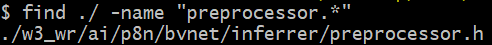
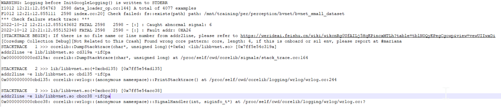
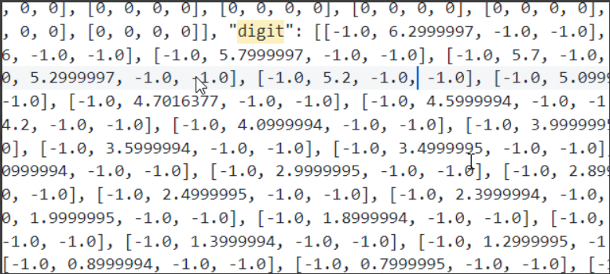
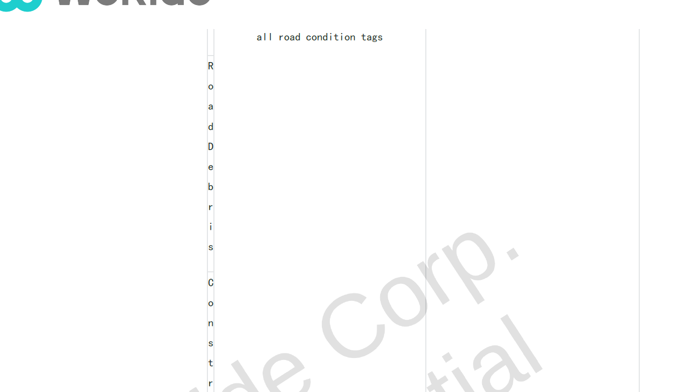
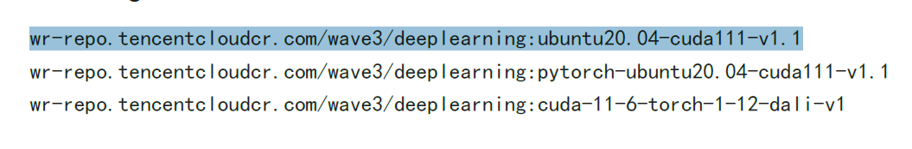

95_WR_MS2_Q&A
Version: 20221012
for example:
1. Question 1 XXXXXXXX TANG Yazhe (XC-AS/PJ-WIN-PER2)
2. Question 2 xxxxxxxxx LA Lei (XC-AS/PJ-WIN-PER1)
LaneNet
BvNet
Q1: The BVNET in the code warehouse has only head files and no source file.There are fewer comments in the header file. user-42e3d

Q2: After the python code is updated, the training reports an error. DENG Zhonghao (XC-AS/PJ-WIN-PER2)

CarNet
CHEN Wenhui (XC-AS/PJ-WIN-PER5)
In the indicators obtained by Flashing training, Accuracy and Precision and documents are basically close, but the Recall and F1-SCORE values are very low.
The numerical differences between the Precision and RECalls show that the number of FALSE-Negative is very large at the formula level, but it does not match the value of the account and needs to be further explained.


ImageODD
TrafficLight
Q1: Considering the merger of the second -stage detection and the third -stage decision -making network into a model, enter the CROP Images, and output the steering information of 4 directions?
Q2: Will the next version of the code be added to the Bulb Information, the Location detection of the 2D box?
Q3: Have you tried LSTM to be replaced with Transformer?
Q4: The current time -consuming test on 3080, detector: 20ms, decider: 3200ms, what platform do you test on what platforms do you test?
Q5: Marking requirements: Is the labeling content like Is Current Direction, and can be increased by labeling content like Is Intersections?
Q6: What is the reason why the sequence length is set to set 100 frames?Is there a difference between 100 frames and 150 frames?Have you tried 50 frames in the length of Sequence?What is the impact on the result?
Q7: Why is the real value of DIGIT 6.2999?

Q8, Detector model: Is there no detection for Type?Is it not detected in the end?
Q9, Detector model: Data enhancement has considered the contrast and the brightness is enhanced?It will still bring new questions
GUO Dashan (XC-AS/PJ-WIN-PER1)
Q1, Traffic_light/TF_DECIDER/MODEL.PY File Calculates the code logic of the code in the calculation of Attention_mask in the TLDECIDER () class built_transformer_encoder () function. Please confirm it.
Original code implementation `
mask
=
tf.cast(tf.reduce_sum(raw_fea, axis
=-
1
, keepdims
=
True
)
==
0
,
dtype
=
self
._compute_dtype)
mask
=
tf.where(mask
*
tf.transpose(mask, [
0
,
1
,
3
,
2
])
==
1
,
0
,
1
)
`
If 0 means that object is false (does not exist), then calculating the Self-Wention Mask should only retain Object at the same time, that is, `
# raw_fea: (batch_size, timestamp, object, feat_dim)
mask
=
tf.cast(tf.reduce_sum(raw_fea, axis
=-
1
, keepdims
=
True
) ！
=
0
,
dtype
=
self
._compute_dtype)
# mask : (batch_size, timestamp, object, object)
mask
=
tf.where(mask
*
tf.transpose(mask, [
0
,
1
,
3
,
2
])
==
1
,
1
, 0
)
`
Q2, the code has almost no comments. It is not friendly to other people to get started quickly. Can Wen Yuan ask the classmates to write one or two comments on each class or more important functions, which is good for both parties.
Q3, from the code point of view, the traffic light uses two stages of schemes (TL_DETETOR+TL_DECIDER). So is it compared with a single -end -end -to -end scheme, what is the main advantage?
Q4, since two stages of schemes have been adopted, have it been evaluated separately for a single stage module, and which part of the two stages have a greater impact on the final recognition results. For example, assuming that all TL_DETETOR predicts correctly, what is the accuracy of using TL_DECIDER forecasting?
TrafficSign
Question 1: The classification results of the Traffic Sign model are the result of the classification of convolutional layers in the Design Doc, but the code delivered in the MS2 is the result of the FC.Do you use FC instead of convolution? WANG Cong (BCSC/EPA1, XC-AS/PJ-WIN-PER2)
Liper
CHENG Changhao (XC-AS/PJ-WIN-PER2)
Question 1: There are many indicators for the accuracy evaluation of 3D Object DETECTION. Why do they provide these indicators and what performance do they reflect?
Question 2: Documents and actual delivery acceptance contents are different. For example, accuracy indicators in the current document: 30M Map = 0.0459 is too outrageous, and the Infinence command does not match the actual use.
Question three: I did not understand Fine_bird_view and Bird_view ideas
LAI Chuanbin (XC-AS/PJ-WIN-PER1)
The currently delivered LIPER model only predicts Curb, and there is no predictable driving area. How to use CURB after the model predicts Curb? Does it generate a driving area through CURB?
The LIPER module delivered by the MS2 has no indicators related to CURB, how to evaluate the predictive effect of CURB;
What is the principle of generating BirdView, what does it mean by the input parameters that depend on, and how to set it;
What is the role of the DrivableView class in the LIPER module, what is the meaning, role, and generation principle of Ray_grids, what is the relationship between the principle, what is the Birdview class, why is it double the size of Birdview;
Multi-Task
1. This update only updated the SWIPER_MULTI-TASK_README.PF. For the previous feedback, "wave3_swe.3_viper_software_detail_image_View_multi-Task_v2.0" document was not updated. There are multiple problems in the file
The document question is as follows:
The provided documents are not satisfied with the delivery needs, and the content is messy.
(1) Lack of version control instructions
Party B provides Version instructions without detailed instructions which changes have been made. For reference, Table 1
Table 1 version control
|
Version |
change content |
Modified person |
date |
Review |
|
1.1 |
Added 2D target detection module |
Zhang San |
2022.09.06 |
Li Si |
|
1.1 |
Fix the problem of the 2D reasoning target missed inspection |
Zhang San |
2022.09.07 |
Li Si |
(2) The format is not rigorous
Party B has obvious problems with the format format, which is as follows as follows

(3) Explain the documentation of Chinese and English mixed
Either English, or all Chinese, or provide the Chinese and English dual versions.Chinese and English mixed is not rigorous.In order to specify the documentation, it is recommended to provide the Chinese and English dual version.
(4) Detailed design instructions for the delivery document. Only the network structure is briefly introduced and the configuration document description should be provided with detailed code design instructions (which should include code design specifications (compliance with the level of car regulations), detailed design process, functional function, functional functionThe module description, the dependency UML, functional function and variable detailed description, interface function description, abnormal processing description, deployment description, function test description, etc.).
2. In the user manual provided by the provided user manual "SWE.3_VIPER_MULTI-TASK_README", the position of the code is not consistent
3. "SWE.3_Access_TO_TRAINING_PLATFORM_README" has no TensorFlow model in the mirror

4. Use Deeplearning-V3 image, the code cannot run normally.
MOT
At present, this module does not have corresponding acceptance standards, and data and indicators need to be supplemented.
The user_manual description document is required. Look at the C ++ code alone (basically no annotation), and it is difficult for newcomers to understand.
At present, the main location information is used to predict Kalman. Can detecting volatility (Location is not allowed+long -term missed inspection) can it be effectively solved?